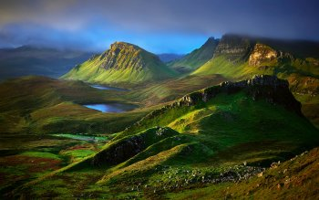

Article: Sìm Frìseal
Air madainn fhuair, mhì-chàillear choisich Sìm Frìseal, fear de cheannardan Gàidhealach nan Seumasach, a-mach à seo, far an deigheadh a cheann a chur dheth. Bha Morair MacShimidh air pàigheadh mar-thà airson nataic a chuir e ri Teàrlach Èideard Stiùbhart le a chuid oighreachdan a chall. Nise a dh’aindeoin a chuid seòltachd bha an duine ris an canadh iad “An Sionnach” a’ dol a phàigheadh le a bheatha. Cha b’ ann a-mhàin a’ cur às do reubaltaich a bha na h-ùghdarrasan, bha bàs MhicShimidh gu bhith na rabhadh do chàch. Bhiodh e glic do Sheumasaich eile, ’s a mhac Sìm Òg nam measg, feart a thoirt. Bha Sìm Òg e fhèin anns a’ phrìosan, ach dìreach beagan mhìosan an dèidh bàs athar bha e a’ tòiseachadh a choimhead roimhe. Chaidh Sìm Òg, chaidh ionnsachadh gu mòr aig deas. Bha na daoine a tha sin, ged a bha iad Gàidhealach agus tha litrichean brèagha bho Shìm Òg ag ràdh “ge b’ e an rud gus an tèid an anail mu dheireadh àsam cha chaill mi a’ Ghàidhlig”. Ach aig an aon àm, bha iad gallda. Bha fios aige cò ris a bha e dreach Ghlaschu ’s Dhùn Èideann agus cuideachd Chìll Rìmhinn ged a bha sin na bu lugha, cò ris a bha iad coltach, dè bha daoine a’ sùileachadh, dè na h-aodaichean, dè leòm a bha iad ag iarraidh gus gum biodh seasamh aig duine nan lùib, fhios agad. Agus a-rithist air tàilleibh, cha robh na fearainn, cha robh iad air am fearann a chall às dèidh Bliadhna Theàrlaich, mar sin dh’fheumadh e a bhith ceart cinnteach, fhios agad, gum faigheadh e a-staigh air an riaghaltas. Bheireadh an lagh, dhèanadh e pàirt dhen sin, ach dh’fheumadh e cuideachd ann an dòigh rudan a dhèanamh mar na rèisimeidean a thogail gus an gabhadh an riaghaltas a leisgeul agus leisgeul an teaghlaich. Chaidh iomadh rèisimeid Gàidhealach eile a thogail anns an aon dòigh. Mu àm Cogadh Napoleon bha iad a’ dèanamh an-àird an ceathramh cuid de dh’ Arm Bhreatainn. Ann an dà fhichead bliadhna, chaidh deich mìle duine às an Eilean Sgìtheanach a-mhàin dha na rèisimeidean ùra, barrachd air na tha a’ còmhnaidh anns an eilean uile gu lèir an-diugh, agus ’s ann mar a chaidh na rèisimeidean a-null thairis ann an seirbheis a’ chrùin a dh’fhàg gun do lean na mìltean Ghàidheal ’s gu dearbha coimhearsnachdan slàn a-nall iad nan imrich.